1.8
Tegneprogram
I dette prosjektet lager vi et tegneprogram slik at du etterpå kan lage din egen kunst. Du kan tegne med forskjellige farger, bruke viskelær, lage stempler og mye mer!

Denne første delen kan du godt få hjelp fra en voksen til å gjøre!
Ressurser_Tegneprogram.zip og legg den på skrivebordet på datamaskinen din eller en annen plass du finner igjen.Extract All, Pakk ut filer eller noe lignende.Vi starter med å lage en blyant som tegner når du drar den rundt på scenen.
slett.Scene og deretter på Bakgrunner-fanen. Klikk  for å laste opp bakgrunnen som heter
for å laste opp bakgrunnen som heter frame.png i katalogen du hentet under forberedelsene. ved siden av Ny figur-teksten. Velg filen green-pencil.png som ligger i den nedlastede katalogen. Kall den nye figuren Blyant.Bytt til Drakter-fanen og velg senterpunkt for figuren ved hjelp av  . Flytt korset slik at det markerer blyantspissen. Da vil spissen tegne og ikke midten av blyanten.
. Flytt korset slik at det markerer blyantspissen. Da vil spissen tegne og ikke midten av blyanten.

Få blyanten til å følge musepekeren rundt på scenen ved å bruke for alltid- og gå til musepeker-klossene.
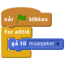
Nå vil vi bruke denne blyantfiguren som en ordentlig blyant. Om du ser under Penn-kategorien kan du se mange slags tegnefunksjoner. De vi er interessert i nå er penn på og penn av.
Vi vil bruke museknappen til å kontrollere blyanten - når museknappen er nede tegner blyanten og når museknappen er oppe tegner den ikke. Vi kan gjøre dette ved å bruke enn hvis - ellers- og en museknappen er nede?-kloss. Utvid skriptet som følger.
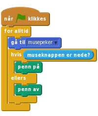
Klikk på det grønne flagget.
Etterhvert vil skjermen bli ganske full av rabbel. Vi kan bruke slett-klossen til å fjerne dette.
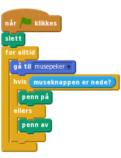
Klikk på det grønne flagget.
I stedet for å måtte starte og stoppe prosjektet for å slette tavla kan vi lage en knapp som sletter alt i stedet.
Vi kan fortsatt bruke slett-klossen.
cancel-button.png.Slett.Gi slette-figuren dette skriptet:
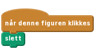
Klikk på det grønne flagget.
Til nå har vi bare kunnet tegne blå streker. Vi kan bruke andre farger også!
Vi legger til noen figurer på bunnen av skjermen. Figurene vil se ut som fargede knapper. Når vi klikker på en knapp endres blyantfargen til den fargen knappen har. For å vise at vi har byttet farge skal vi gjøre det slik at blyanten også skifter farge.
red-selector.gif.Rød og flytt den ned i venstre hjørne av skjermen.Gi den et skript som sender meldingen Rød.
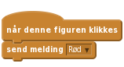
Dette er alt denne figuren gjør. Det vanskelige arbeidet gjøres av blyanten.
Drakter-fanen. Importer drakten red-pencil.png. Sett midtpunktet til blyantspissen for denne drakten også.Legg til et nytt skript. Når blyanten får meldingen Rød, skal den forandre drakt til red-pencil. Og så skal den selvsagt også begynne å tegne rødt. Slik bygger du skriptet:
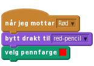
For å velge fargen i velg pennfarge-klossen kan du først klikke i fargeruten på klossen, og deretter på den røde knappen du lagde på scenen tidligere.
Klikk på det grønne flagget.
Klikk på det grønne flagget.
Du har sikkert lagt merke til at man kan tegne over hele scenen, og det blir jo litt rotete. Skal vi begrense skriblingen til bare den lysegrå tavla må vi sette grenser for hvor blyanten kan gå.
Du husker kanskje at Scratch definerer punkter på scenen ved hjelp av x- og y-koordinater. Når du flytter musepekeren rundt omkring vil du se disse verdiene nedenfor det høyre hjørnet av scenen.
For å finne ut hvor grensene for tavla går kan vi begynne nede i det venstre hjørnet. Da står det x: -230 og y: 120. Flytter vi pekeren rett bort til det høyre hjørnet ser vi at y er uforandret, mens x har blitt til 230. Da vet vi at x-koordinatene går fra -230 til 230. y-koordinatene finner vi ved å flytte pekeren opp til toppen av tavla. Da kan vi lese av at y-koordinatene går fra -120 til 170.
Disse verdiene kan vi bruke inne i en hvis-kloss, og si at når musepekeren er utenfor tavlas x- og y-koordinater, så virker ikke blyanten.
Legg til testene som sier at blyanten bare får følge musepekeren hvis y er større enn -120 og mindre enn 170 og x er større enn -230 og mindre enn 230. For å få plass til alle testene må du først legge inn en _ og _-kloss, og deretter legge til to nye _ og _-klosser inni denne.
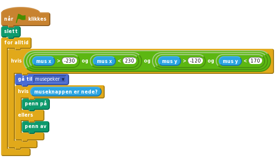
Siden vi ikke kan tegne utenfor tavla, er det like greit at blyanten bare blir borte når musepekeren går utenfor tavla. For å gjøre dette må vi erstatte hvis-klossen ovenfor med en hvis - ellers-kloss. Reglene blir nå: Hvis musepekeren er innenfor tavlas x- og y-koordinater følger blyanten pekeren, ellers skjules blyanten.
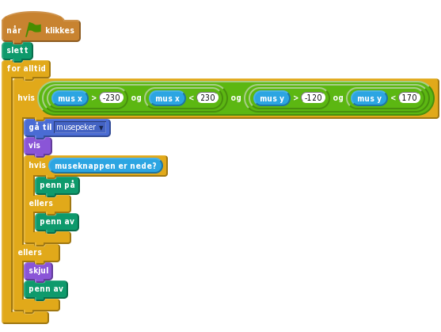
Fordi blyanten vil skjules når pekeren går utenfor tavla, må vi få den til å vises igjen når den kommer innenfor. Pass derfor på at du får lagt inn en vis-kommando innenfor hvis-klossen.
Vi har også lagt på en penn av-kloss når blyanten er utenfor tavla, for at den ikke skal tegne en strek akkurat i det den kommer tilbake inn på tavla.
Klikk på det grønne flagget.
Nå kan vi tegne hva vi vil. Men hva om vi trenger et viskelær?
Hmm… da kan vi jo bare få blyanten til å tegne med samme farge som tavla! Og så gir vi blyanten en viskelærdrakt!
eraser.png fra katalogen du lastet ned i starten. Kall figuren Viskelær. , og deretter drar du den ned i høyre hjørne, ved siden av slett-knappen.
, og deretter drar du den ned i høyre hjørne, ved siden av slett-knappen.Gi viskelær-figuren et skript som sender meldingen Visk.
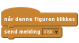
Drakter-fanen og importer eraser.png igjen. Husk å sette senterpunktet til viskelæret foran.Blyanten svarer på Visk-meldingen med å bytte pennfarge til grå (bruk fargevelgeren for å velge bakgrunnsfargen til tavla).
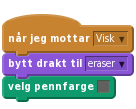
Klikk på det grønne flagget.
Nå skal vi lage et stempel som kan lage små avtrykk på tavla.
Legg til en ny figur med valgfritt utseende og kall den Stempel. Vi valgte Scratch-logoen fra Ting-mappen i biblioteket. Krymp figuren og plasser den nederst på skjermen ved siden av de andre verktøyene. Når figuren klikkes skal den sende meldingen Stempel.
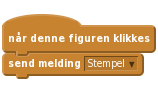
stempelmodus og la den gjelde For denne figuren. Fjern avhukingen foran variabelen slik at den ikke vises på scenen. Oppgaven til denne variabelen er å holde styr på om vi skal tegne eller stemple.Legg til et skript for blyanten som responderer på Stempel-meldingen. Skriptet skal skifte drakt til den samme drakten du valgte for stempelet. Deretter skal det sette verdien til stempelmodus lik på.
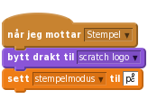
Forandre de andre skriptene som er knyttet til fargevelgerne og viskelæret slik at de setter stempelmodus lik av. For eksempel blir viskelærskriptet slik:
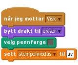
Til slutt må vi sjekke variabelen inne i hvismuseknappen er nede? for å se om vi skal tegne eller stemple. Hvis stempelmodus er satt til på skal vi stemple, hvis ikke skal vi bruke den eksisterende penn på-klossen.
![når grønt flagg klikkes
slett
for alltid
hvis <<<(mus x) > (-230)> og <(mus x) < (230)>> og <<(mus y) > (-120)> og <(mus y) < (170)>>>
gå til [musepeker v]
vis
hvis (museknappen er nede?)
hvis <(stempelmodus) = [på]>
stemple avtrykk
ellers
penn på
slutt
ellers
penn av
slutt
ellers
skjul
penn av](d340f64c2aed8e892e18894cdd0ef076c75b5ffa.png)
Klikk på det grønne flagget.
Veldig bra jobba! Du er nå ferdig med programmet.
Du kan også prøve disse utfordringene!
I denne utfordringen skal du legge til en blyant som kan forandrer farge mens du tegner. Kult, ikke sant?
Først må du legge til regnbue-knappen og regnbue-drakten:
rainbow-selector.gif. Kall den Regnbue og sett den ved siden av de andre knappene nederst til venstre. Figuren skal sende meldingen Regnbue når den klikkes.rainbow-pencil.png som en ny drakt til blyanten. Husk å justere senterpunktet.Hint: Du har sikkert fått ting til å forandre seg med jevne mellomrom i tidligere prosjekter, for eksempel tid eller poeng. I dette tilfellet kan du gjøre nesten det samme, men passe på at det er pennfarge som endrer seg.
Klossen som endrer pennfargen må legges inn i en løkke. Men du trenger også noe å kontrollere løkken med, slik at den bare endrer farge når regnbueblyanten er valgt.
Hint: Du kan gjøre dette på en måte som ligner på hvordan stempelmodus styrer når stempelet skal skrues av og på. Prøv å lage en variabel som du kaller regnbuemodus. La denne skrues på når regnbueblyanten klikkes, og av når de andre fargene velges.
Klikk på det grønne flagget.
Nå skal du prøve deg på å lage snarveier på tastaturet. Det betyr at man i stedet for å klikke på knappene på skjermen kan bruke tastene for å bytte farge, stemple og viske ut.
Du kan bruke hvistast _ trykket? for å benytte tastaturet. For hver tast du legger til trenger du en ny hvistast _ trykket?-kloss som sender de samme meldingene som verktøy-valgene gjør når de klikkes. Legg til skriptene på scenen.
Vi har brukt disse snarveiene:
rgbywsvaKlikk på det grønne flagget.
En annen funksjon som tegneprogrammer gjerne har er å forandre størrelsen på blyantstreken. Prøv å se om du får til dette.
Det er en ting som gjør dette vanskelig. Noen ganger trenger vi å endre størrelsen på blyantstreken og noen ganger trenger vi å forandre størrelsen på drakten. Det er avhengig av om du bruker blyanten eller stemplet.
bigger-selector.gif og smaller-selctor.gif fra katalogen med ressurser. Kall figurene Større og Mindre.Større og Mindre.endre pennebredde med 1 eller endre størrelse med 10, avhengig av verdien på stempelmodus.Hint: Du kan bruke noen av endre-klossene under Penn eller Utseende. For å forminske setter du bare et minustegn foran tallet.
Hint: For å holde styr på om det er blyantstreken eller stempelet som skal endres må du bruke en hvis - ellers-kloss.
pil opp for større og pil ned for mindre.stempelstørrelse. Denne må oppdateres hver gang størrelsen på stempelet endres. Når man skifter fra blyant til stempel settes så størrelsen fra denne variabelen.Klikk på det grønne flagget.
Veldig, veldig bra! Nå kan du tegne akkurat det du vil!
Ikke glem å del spillet ditt med venner og familie ved å trykke på Legg ut i menyen!